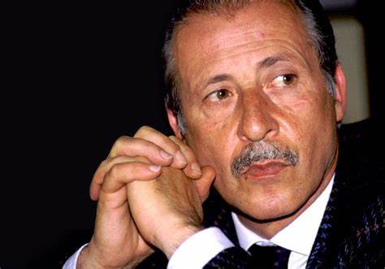
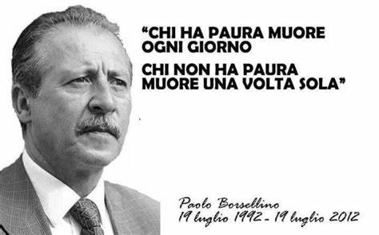
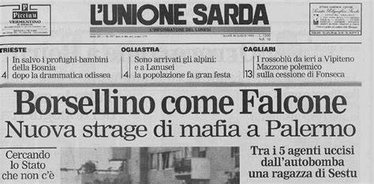
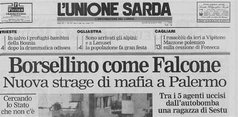

“Non ho mai chiesto di occuparmi di mafia. Ci sono entrato per caso. E poi ci sono rimasto per un problema morale. La gente mi moriva attorno.”
Il suo primo incarico è al tribunale di Enna nella sezione civile. Nel 1967 viene nominato pretore, ed è in questo momento che inizia a conoscere la mafia.

LA STRAGE DI VIA D'AMELIO
19 Luglio 1992 il magistrato Paolo Borsellino è stato ucciso nella Strage di via D'Amelio, dove perse la vita insieme a cinque uomini della sua scorta.
dopo aver pranzato con la moglie ed i figli, il giudice si è recato insieme alla scorta in via D'Amelio a trovare la madre. Qui una Fiat 126, parcheggiata vicino alla casa della madre di Borsellino, sulla quale erano stati messi 100 kg di esplosivo, è stata fatta esplodere al passaggio del giudice.
Antonino Vullo descrisse così l'esplosione:
«Il giudice e i miei colleghi erano già scesi dalle auto, io ero rimasto alla guida, stavo facendo manovra, stavo parcheggiando l'auto che era alla testa del corteo.
Non ho sentito alcun rumore, niente di sospetto, assolutamente nulla. Improvvisamente è stato l'inferno. Ho visto una grossa fiammata, ho sentito sobbalzare la blindata.
L'onda d'urto mi ha sbalzato dal sedile. N on so come ho fatto a scendere dalla macchina.
Attorno a me c'erano brandelli di carne umana sparsi dappertutto
 

Non ho sentito alcun rumore, niente di sospetto, assolutamente nulla. Improvvisamente è stato l'inferno. Ho visto una grossa fiammata, ho sentito sobbalzare la blindata.
L'onda d'urto mi ha sbalzato dal sedile. N on so come ho fatto a scendere dalla macchina.
Attorno a me c'erano brandelli di carne umana sparsi dappertutto